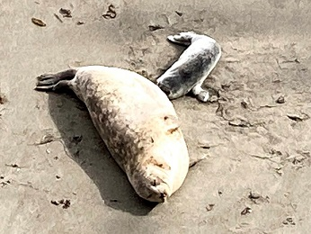

Teacher Kit for Point Lobos Visits
Start Here
School Walk Tips
Routes and Stops
Marine Mammals
Plants, Lichen, Algae
Rocks
Test Yourself!
Practice 1: Is this Spanish moss or lace lichen?
(Hint: Hover over the image below to find out!)
Practice 2: Sea lion or harbor seal?

What are these? (Click your choice.)
a. sea lions
b. harbor seals